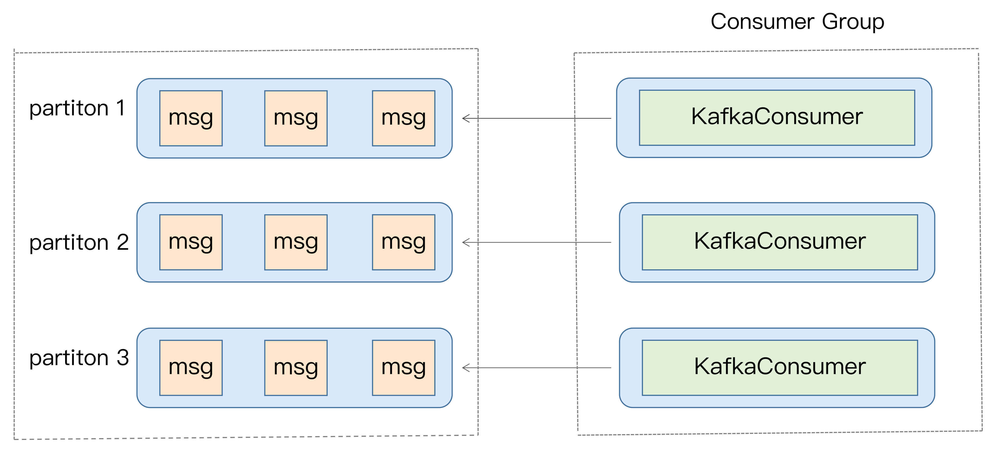
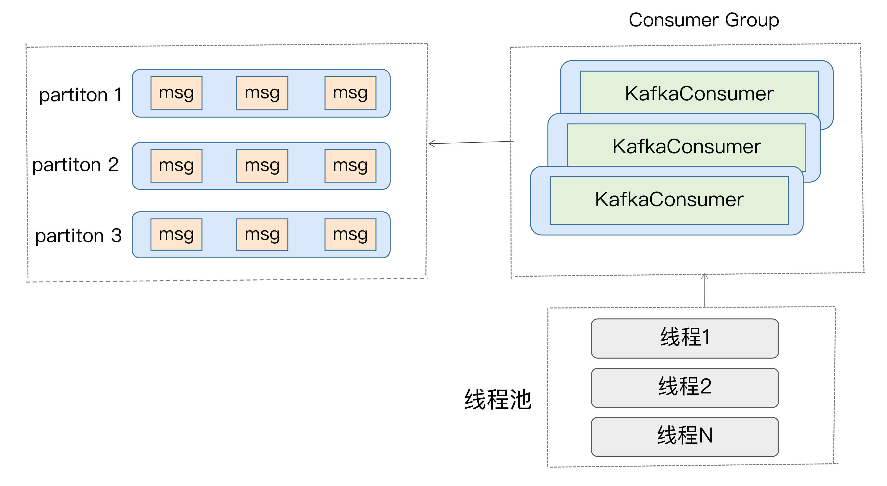
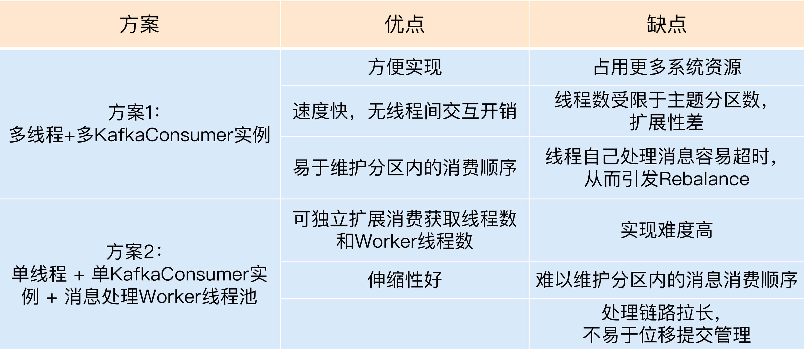
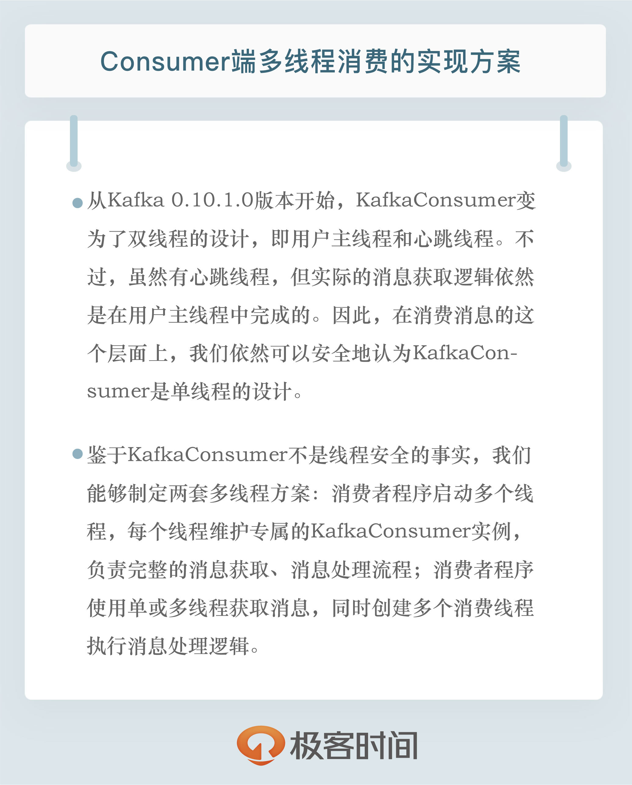

- 00 开篇词 为什么要学习Kafka？.md
- 01 消息引擎系统ABC.md
- 02 一篇文章带你快速搞定Kafka术语.md
- 03 Kafka只是消息引擎系统吗？.md
- 04 我应该选择哪种Kafka？.md
- 05 聊聊Kafka的版本号.md
- 06 Kafka线上集群部署方案怎么做？.md
- 07 最最最重要的集群参数配置（上）.md
- 08 最最最重要的集群参数配置（下）.md
- 09 生产者消息分区机制原理剖析.md
- 10 生产者压缩算法面面观.md
- 11 无消息丢失配置怎么实现？.md
- 12 客户端都有哪些不常见但是很高级的功能？.md
- 13 Java生产者是如何管理TCP连接的？.md
- 14 幂等生产者和事务生产者是一回事吗？.md
- 15 消费者组到底是什么？.md
- 16 揭开神秘的“位移主题”面纱.md
- 17 消费者组重平衡能避免吗？.md
- 18 Kafka中位移提交那些事儿.md
- 19 CommitFailedException异常怎么处理？.md
- 20 多线程开发消费者实例.md
- 21 Java 消费者是如何管理TCP连接的_.md
- 22 消费者组消费进度监控都怎么实现？.md
- 23 Kafka副本机制详解.md
- 24 请求是怎么被处理的？.md
- 25 消费者组重平衡全流程解析.md
- 26 你一定不能错过的Kafka控制器.md
- 27 关于高水位和Leader Epoch的讨论.md
- 28 主题管理知多少_.md
- 29 Kafka动态配置了解下？.md
- 30 怎么重设消费者组位移？.md
- 31 常见工具脚本大汇总.md
- 32 KafkaAdminClient：Kafka的运维利器.md
- 33 Kafka认证机制用哪家？.md
- 34 云环境下的授权该怎么做？.md
- 35 跨集群备份解决方案MirrorMaker.md
- 36 你应该怎么监控Kafka？.md
- 37 主流的Kafka监控框架.md
- 38 调优Kafka，你做到了吗？.md
- 39 从0搭建基于Kafka的企业级实时日志流处理平台.md
- 40 Kafka Streams与其他流处理平台的差异在哪里？.md
- 41 Kafka Streams DSL开发实例.md
- 42 Kafka Streams在金融领域的应用.md
- 加餐 搭建开发环境、阅读源码方法、经典学习资料大揭秘.md
- 用户故事 黄云：行百里者半九十.md
- 结束语 以梦为马，莫负韶华！.md
20 多线程开发消费者实例
你好，我是胡夕。今天我们来聊聊Kafka Java Consumer端多线程消费的实现方案。
目前，计算机的硬件条件已经大大改善，即使是在普通的笔记本电脑上，多核都已经是标配了，更不用说专业的服务器了。如果跑在强劲服务器机器上的应用程序依然是单线程架构，那实在是有点暴殄天物了。不过，Kafka Java Consumer就是单线程的设计，你是不是感到很惊讶。所以，探究它的多线程消费方案，就显得非常必要了。
Kafka Java Consumer设计原理
在开始探究之前，我先简单阐述下Kafka Java Consumer为什么采用单线程的设计。了解了这一点，对我们后面制定多线程方案大有裨益。
谈到Java Consumer API，最重要的当属它的入口类KafkaConsumer了。我们说KafkaConsumer是单线程的设计，严格来说这是不准确的。因为，从Kafka 0.10.1.0版本开始，KafkaConsumer就变为了双线程的设计，即用户主线程和心跳线程。
所谓用户主线程，就是你启动Consumer应用程序main方法的那个线程，而新引入的心跳线程（Heartbeat Thread）只负责定期给对应的Broker机器发送心跳请求，以标识消费者应用的存活性（liveness）。引入这个心跳线程还有一个目的，那就是期望它能将心跳频率与主线程调用KafkaConsumer.poll方法的频率分开，从而解耦真实的消息处理逻辑与消费者组成员存活性管理。
不过，虽然有心跳线程，但实际的消息获取逻辑依然是在用户主线程中完成的。因此，在消费消息的这个层面上，我们依然可以安全地认为KafkaConsumer是单线程的设计。
其实，在社区推出Java Consumer API之前，Kafka中存在着一组统称为Scala Consumer的API。这组API，或者说这个Consumer，也被称为老版本Consumer，目前在新版的Kafka代码中已经被完全移除了。
我之所以重提旧事，是想告诉你，老版本Consumer是多线程的架构，每个Consumer实例在内部为所有订阅的主题分区创建对应的消息获取线程，也称Fetcher线程。老版本Consumer同时也是阻塞式的（blocking），Consumer实例启动后，内部会创建很多阻塞式的消息获取迭代器。但在很多场景下，Consumer端是有非阻塞需求的，比如在流处理应用中执行过滤（filter）、连接（join）、分组（group by）等操作时就不能是阻塞式的。基于这个原因，社区为新版本Consumer设计了单线程+轮询的机制。这种设计能够较好地实现非阻塞式的消息获取。
除此之外，单线程的设计能够简化Consumer端的设计。Consumer获取到消息后，处理消息的逻辑是否采用多线程，完全由你决定。这样，你就拥有了把消息处理的多线程管理策略从Consumer端代码中剥离的权利。
另外，不论使用哪种编程语言，单线程的设计都比较容易实现。相反，并不是所有的编程语言都能够很好地支持多线程。从这一点上来说，单线程设计的Consumer更容易移植到其他语言上。毕竟，Kafka社区想要打造上下游生态的话，肯定是希望出现越来越多的客户端的。
多线程方案
了解了单线程的设计原理之后，我们来具体分析一下KafkaConsumer这个类的使用方法，以及如何推演出对应的多线程方案。
首先，我们要明确的是，KafkaConsumer类不是线程安全的(thread-safe)。所有的网络I/O处理都是发生在用户主线程中，因此，你在使用过程中必须要确保线程安全。简单来说，就是你不能在多个线程中共享同一个KafkaConsumer实例，否则程序会抛出ConcurrentModificationException异常。
当然了，这也不是绝对的。KafkaConsumer中有个方法是例外的，它就是wakeup()，你可以在其他线程中安全地调用KafkaConsumer.wakeup()来唤醒Consumer。
鉴于KafkaConsumer不是线程安全的事实，我们能够制定两套多线程方案。
1.消费者程序启动多个线程，每个线程维护专属的KafkaConsumer实例，负责完整的消息获取、消息处理流程。如下图所示：

2.消费者程序使用单或多线程获取消息，同时创建多个消费线程执行消息处理逻辑。获取消息的线程可以是一个，也可以是多个，每个线程维护专属的KafkaConsumer实例，处理消息则交由特定的线程池来做，从而实现消息获取与消息处理的真正解耦。具体架构如下图所示：

总体来说，这两种方案都会创建多个线程，这些线程都会参与到消息的消费过程中，但各自的思路是不一样的。
我们来打个比方。比如一个完整的消费者应用程序要做的事情是1、2、3、4、5，那么方案1的思路是粗粒度化的工作划分，也就是说方案1会创建多个线程，每个线程完整地执行1、2、3、4、5，以实现并行处理的目标，它不会进一步分割具体的子任务；而方案2则更细粒度化，它会将1、2分割出来，用单线程（也可以是多线程）来做，对于3、4、5，则用另外的多个线程来做。
这两种方案孰优孰劣呢？应该说是各有千秋。我总结了一下这两种方案的优缺点，我们先来看看下面这张表格。

接下来，我来具体解释一下表格中的内容。
我们先看方案1，它的优势有3点。
- 实现起来简单，因为它比较符合目前我们使用Consumer API的习惯。我们在写代码的时候，使用多个线程并在每个线程中创建专属的KafkaConsumer实例就可以了。
- 多个线程之间彼此没有任何交互，省去了很多保障线程安全方面的开销。
- 由于每个线程使用专属的KafkaConsumer实例来执行消息获取和消息处理逻辑，因此，Kafka主题中的每个分区都能保证只被一个线程处理，这样就很容易实现分区内的消息消费顺序。这对在乎事件先后顺序的应用场景来说，是非常重要的优势。
说完了方案1的优势，我们来看看这个方案的不足之处。
- 每个线程都维护自己的KafkaConsumer实例，必然会占用更多的系统资源，比如内存、TCP连接等。在资源紧张的系统环境中，方案1的这个劣势会表现得更加明显。
- 这个方案能使用的线程数受限于Consumer订阅主题的总分区数。我们知道，在一个消费者组中，每个订阅分区都只能被组内的一个消费者实例所消费。假设一个消费者组订阅了100个分区，那么方案1最多只能扩展到100个线程，多余的线程无法分配到任何分区，只会白白消耗系统资源。当然了，这种扩展性方面的局限可以被多机架构所缓解。除了在一台机器上启用100个线程消费数据，我们也可以选择在100台机器上分别创建1个线程，效果是一样的。因此，如果你的机器资源很丰富，这个劣势就不足为虑了。
- 每个线程完整地执行消息获取和消息处理逻辑。一旦消息处理逻辑很重，造成消息处理速度慢，就很容易出现不必要的Rebalance，从而引发整个消费者组的消费停滞。这个劣势你一定要注意。我们之前讨论过如何避免Rebalance，如果你不记得的话，可以回到专栏第17讲复习一下。
下面我们来说说方案2。
与方案1的粗粒度不同，方案2将任务切分成了消息获取和消息处理两个部分，分别由不同的线程处理它们。比起方案1，方案2的最大优势就在于它的高伸缩性，就是说我们可以独立地调节消息获取的线程数，以及消息处理的线程数，而不必考虑两者之间是否相互影响。如果你的消费获取速度慢，那么增加消费获取的线程数即可；如果是消息的处理速度慢，那么增加Worker线程池线程数即可。
不过，这种架构也有它的缺陷。
- 它的实现难度要比方案1大得多，毕竟它有两组线程，你需要分别管理它们。
- 因为该方案将消息获取和消息处理分开了，也就是说获取某条消息的线程不是处理该消息的线程，因此无法保证分区内的消费顺序。举个例子，比如在某个分区中，消息1在消息2之前被保存，那么Consumer获取消息的顺序必然是消息1在前，消息2在后，但是，后面的Worker线程却有可能先处理消息2，再处理消息1，这就破坏了消息在分区中的顺序。还是那句话，如果你在意Kafka中消息的先后顺序，方案2的这个劣势是致命的。
- 方案2引入了多组线程，使得整个消息消费链路被拉长，最终导致正确位移提交会变得异常困难，结果就是可能会出现消息的重复消费。如果你在意这一点，那么我不推荐你使用方案2。
实现代码示例
讲了这么多纯理论的东西，接下来，我们来看看实际的实现代码大概是什么样子。毕竟，就像Linus说的：“Talk is cheap, show me the code!”
我先跟你分享一段方案1的主体代码：
public class KafkaConsumerRunner implements Runnable {
private final AtomicBoolean closed = new AtomicBoolean(false);
private final KafkaConsumer consumer;
public void run() {
try {
consumer.subscribe(Arrays.asList("topic"));
while (!closed.get()) {
ConsumerRecords records =
consumer.poll(Duration.ofMillis(10000));
// 执行消息处理逻辑
}
} catch (WakeupException e) {
// Ignore exception if closing
if (!closed.get()) throw e;
} finally {
consumer.close();
}
}
// Shutdown hook which can be called from a separate thread
public void shutdown() {
closed.set(true);
consumer.wakeup();
}
这段代码创建了一个Runnable类，表示执行消费获取和消费处理的逻辑。每个KafkaConsumerRunner类都会创建一个专属的KafkaConsumer实例。在实际应用中，你可以创建多个KafkaConsumerRunner实例，并依次执行启动它们，以实现方案1的多线程架构。
对于方案2来说，核心的代码是这样的：
private final KafkaConsumer<String, String> consumer;
private ExecutorService executors;
...
private int workerNum = ...;
executors = new ThreadPoolExecutor(
workerNum, workerNum, 0L, TimeUnit.MILLISECONDS,
new ArrayBlockingQueue<>(1000),
new ThreadPoolExecutor.CallerRunsPolicy());
...
while (true) {
ConsumerRecords<String, String> records =
consumer.poll(Duration.ofSeconds(1));
for (final ConsumerRecord record : records) {
executors.submit(new Worker(record));
}
}
..
这段代码最重要的地方是最后一行：当Consumer的poll方法返回消息后，由专门的线程池来负责处理具体的消息。调用poll方法的主线程不负责消息处理逻辑，这样就实现了方案2的多线程架构。
小结
总结一下，今天我跟你分享了Kafka Java Consumer多线程消费的实现方案。我给出了比较通用的两种方案，并介绍了它们各自的优缺点以及代码示例。我希望你能根据这些内容，结合你的实际业务场景，实现适合你自己的多线程架构，真正做到举一反三、融会贯通，彻底掌握多线程消费的精髓，从而在日后实现更宏大的系统。

开放讨论
今天我们讨论的都是多线程的方案，可能有人会说，何必这么麻烦，我直接启动多个Consumer进程不就得了？那么，请你比较一下多线程方案和多进程方案，想一想它们各自的优劣之处。
欢迎写下你的思考和答案，我们一起讨论。如果你觉得有所收获，也欢迎把文章分享给你的朋友。
© 2019 - 2023 Liangliang Lee. Powered by gin and hexo-theme-book.